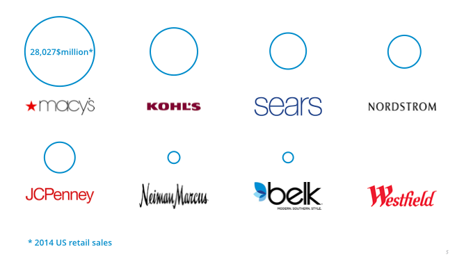
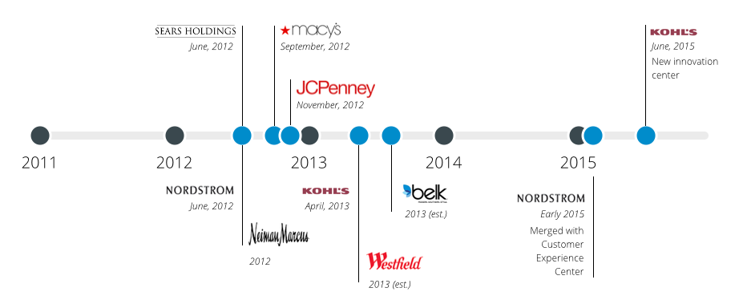
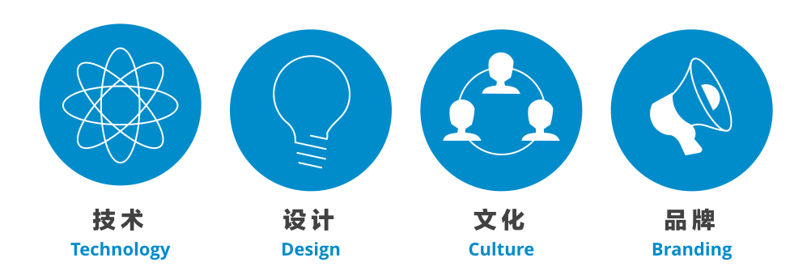
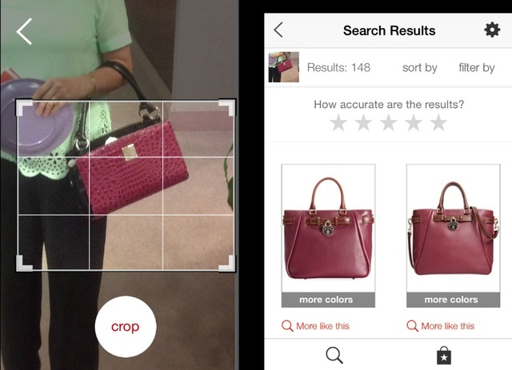
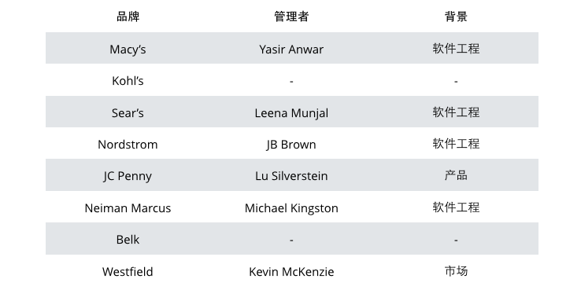
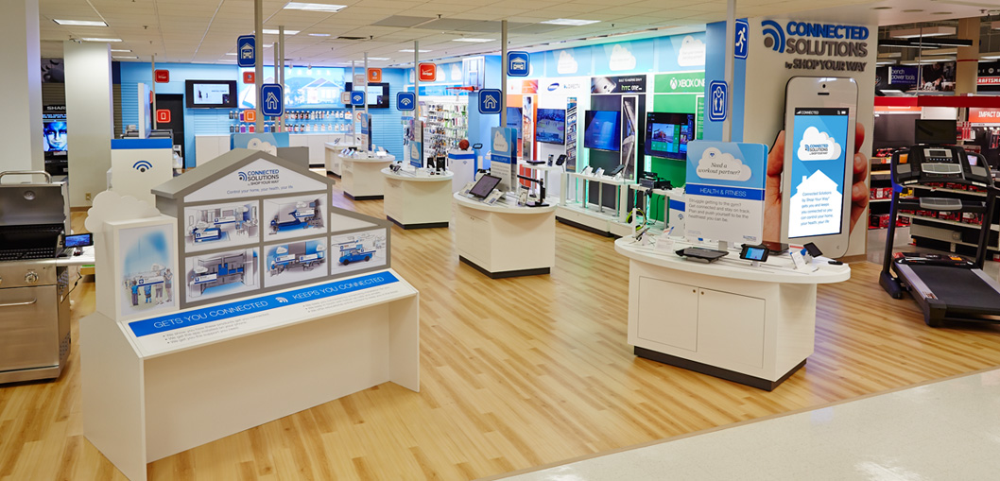
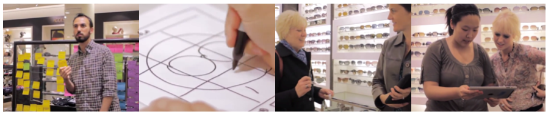
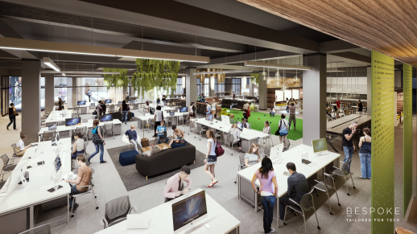
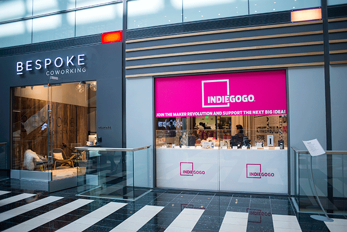

本文将为您解读北美领先的百货型零售商在创新方面、特别是创新实验室的实践。
Westfield位于曼哈顿911遗址公园旁的世贸中心店将在下半年开张，这座价值14亿美元的超级购物中心将集中几年来Westfield最新的创新科技。从伦敦到悉尼、东海岸到西海岸，Westfield的创新实验室，正帮助着全球九十多座购物中心利用最新科技提高购物者的体验。创新服务副总裁Rayna Wiles说：
数字的力量正在放大现实世界的边界。
而释放这种数字力量的，就是创新实验室（Innovation Labs）。我尝试选择8家成立过创新实验室的北美百货零售商（Department Store）进行研究，包括其在媒体上的报道、相关创始人的简历、以及相关研究文章，尝试梳理创新实验室的建造逻辑。主要发现如下：
- 北美销售前9名的百货商，从2012年起，有7家成立过创新实验室；
- 创新实验室的创立者大多来自于工程背景、而非设计；
- 技术战略在创新实验室中起到关键作用，而非设计；
- 创新实验室成功演化的版本是更具组织影响力的数字组织（Digital Group）；
- 实验室构建逻辑兼顾技术、设计、文化、和品牌的成功率更高。
研究涉及的8家北美地区领先的百货商有：

从时间线来看，2012年中到2013年中的一年，8个品牌中的7家建立了自己的创新实验室。

执行力和文化隔离是最大挑战
从更大的组织目标来看，创新的核心目标依然是一方面产生真实业务价值的新产品、新体验、新服务；另一方面驱动企业组织行为的变革。创新实验室的运营依然在这两个核心目标之下。
换句话说，如果不能够持续产出实际的产品、体验、和服务，也不能对组织行为产生一定的变革，创新实验室的价值是并没有兑现的（Capitalized）。
我们的研究发现，几乎所有品牌在建立创新实验室的初端，都倾向于将实验室设置在远离组织的地点，例如创新环境更发达的北加州地区。这样的好处是有助于在一开始建立一个更加敏捷、独立、快速反应的工作环境，而不受到传统大企业现有内部流程的束缚。
但是，这样的隔离也在一定时间内产生了问题，例如：
执行力问题 ：一个产品从想法到真正投入运营需要企业内多个部门的协作才能完成，隔离的状态下，无法了解到执行的难度，也缺少执行的支持，新生的实验室，可能陷入创新的空谈，而无法落地；
次文化问题 ：被研究的多个零售品牌在北美地区多则上百年、少则几十年历史，早已形成了组织内特有的文化和协作方式，创新实验室为了快速创新而产生的次文化可能在未来产生融合的问题，创新实验室的员工稳定性也不足。
从几个已经解散的创新实验室的情况来看，其中几乎所有，在运行的一年到两年半时间里，都未产生真正上线运营的产品、体验、或服务。相反，那些产生了真实商业价值的实验室，依然持续运行、甚至形成了更大的创新组织。
平衡和更全面的运营策略
为了应对上述的两大挑战，一些零售商采取了更加平衡和全面的运营策略，这个策略中包含了四个方向的关注点，它们是：

技术：拥有高执行力的专属技术交付能力，快速响应需求和变化、并尝试使用前沿的技术；
设计：使用设计思维、精益等设计方法论进行迭代式的设计实践；建立多元化角色组成的设计团队；
文化：有计划地组织企业内部的创新活动，鼓励全员参与和草根创新，建立长期的创新漏斗，形成创新文化和行为模式；
品牌：与不同类型的机构合作，配合宣传活动，形成企业特有的创新品牌。
久负盛名的梅西百货（Macy's）在运营其创新实验室时，这种组合性的策略显得尤其明显。
在技术上，任命工程背景的Yasir Anwar为实验室主管，Anwar先生在加入Macy's之前是沃尔玛实验室（Walmartlabs）的技术总监，负责实验室的软件交付。同时Macy's的创新实验室被作为其IT部门的外延进行管理，实验室背靠强大的技术交付团队。
在设计上，实验室组成了多角色的设计团队，并使用精益设计（Lean Design）的设计实践，技术和设计的结合使得实验室产出了多款广受欢迎的应用，例如采用图像识别技术的Image Search，客户只需要拍摄一张照片，就可以自动在Macy's的商品目录中找到类似或与其搭配的商品（下图）。

在文化上，有超过2000为梅西百货员工参与了创新活动的多个环节，组织创新日活动（Day of Innovation），有多款应用的创意都来自于基层员工，创新漏斗持续为企业提供新的想法。
在品牌上，媒体已经将梅西百货作为传统百货公司在数字时代逆袭的典范，并成为「全渠道（Omnichannel）」销售的领导者。
从这个角度看，梅西百货的创新实验室已经融入整个组织，实验室创始人Yasir Anwar先生也从工程副总裁升任集团副总裁，负责商业平台和全渠道的建设和管理，创新也从一个小部门的尝试变成了组织行为。正如首席执行官Terry Lundgren所言：
（公司已形成）持续实验和学习的环境（a test-and-learn environment）
技术依然是核心竞争力
人们往往将创新和充满想象力的设计过程画上等号，从我的研究发现，虽然设计的力量不容忽视，创新的80%依然是增量式的创新（Incremental Innovation），而增量式创新的核心本质依然是「工程」。
8家零售商中有信息记载的6家的核心管理者或创始人，有4位来自于软件工程背景，其余两位来自于产品或市场背景。

而恰恰是任命工程师为实验室创始人的Macy's、Sear's、Nordstrom、Neiman Marcus四个品牌都在创新上获得了更大的成功。
这些管理者也在段时间内获得了更高的职位，影响力可见一斑，例如Sear's创新实验室的创始人、拥有计算机硕士学位的Leena Munjal女士，从2008年IT部门一名普通主管4年内升任至集团高级副总裁。
通常创新实验室的技术战略有如下几个特征：
- 通常从IT部门中建立、并由IT部门管理，由企业的CIO负责；
- 专注于某一特定领域的技术，例如Sear's的创新实验室把创新重点放在了IoT（物联网）上，推出其Integrated Store体验店（见下图）；
- 利用企业内的现有技术资产（IT Assets），例如梅西百货的许多创新大量使用了其成熟的API技术，充分利用已有内容和基础设施；
- 和第三方合作或并购的方式快速获得核心技术，例如Neiman Marcus于2014年与虚拟试衣镜解决方案提供商MemoMi合作；同年又与T1Visions合作推出互动杂志（Interactive Look Books）。
 (Sear's位于San Bruno的智能家居体验店)
技术当然不是创新的唯一驱动力，接下来我们来看设计对创新的影响。
走近消费者是普遍的创新策略
越来越多的零售商意识到，创新必须走近消费者，而走近消费者意味着更快的响应能力和决策速度，为了适应这种变化，零售商们在建立创新实验室时考虑了以下策略：
- 创新实验室的地点都选择在离总部较远、创新文化更丰富的城市，如旧金山和纽约；
- 建立不同与企业内部、更拥抱创新和创意、接近于创业公司的文化：不设过多流程、工作环境更加自由、组织架构更加扁平；
- 更加混合的员工背景，不设立具体职责，实验室成员背景多元，来自于设计、品牌、产品、创意、广告、艺术、电影等等；
- 采用更加精益的产品设计方法，大量使用协作设计（Co-Design）的方式，例如设计迭代、MVP、设计挑战、纸上原型等设计实践被广泛使用。
以Nordstrom为例，畅销书《精益创业》作者Eric Ries特别将其记录在其著作中（参考），Nordstrom的三个重要设计师实践包括：
一周设计迭代 - 一个方案在一周内完成用户研究、创意、原型、测试的全过程，设计周期不超过一周；
到现场去 - 大量使用精益设计（Lean Design）的设计实践，把设计工作室设置在商场内，现场和消费者一起完成研究、创意、原型和测试的全过程（下图）。

短平快的设计实验 - 在设计没有完全成型的时候，销售就已经使用这些「半成品」与消费者进行沟通了，及时收集客户的反馈，设计团队在第一时间进行改进和设计探索。
如果说强大的技术交付能力解决的是「怎么做（How）」的问题，优秀的设计实践解决的则是「做什么（What）」和「为什么（Why）」的问题，这些实践帮助创新实验室找到消费者真实的痛点，让最终的数字服务体验「切中要害」。
最大化影响力
另外我们也发现，技术与设计相结合产出业务价值的另一边，是用创新驱动组织的变革。而驱动变革的核心关键除了「商业结果」之外，是「最大化影响力」，其中包括以下策略：
- 鼓励全员参与创新，Macy's和Neiman Marcus的创新实验室都组织了持续的创新日、创新大赛、创意征集等活动；
- 倾听一线员工的创新想法，并帮助其打磨甚至最终实现；
- 在员工中识别创新的潜在领导者；
- 增加媒体和大众的曝光率；
- 采用「店内创新（In-store Innovation）」、「Pop-up Store」等形式增加消费者在创新过程的参与程度；
- 建立社交网络挖掘潜在的合作伙伴，如创业公司、孵化器、独立品牌、学校、个人、媒体等。
在旧金山，Westfield创造性地在其商场内建立了一座面积达到3500平米的先锋馆Bespoke。这座集合协作办公、Pop-store、新品发布会、以及社交的场地成为创新实验室的一种新的模式。

Westfield既可以在馆内随时建立设计实验室邀请商场内的消费者进行测试、也可以通过协作办公的方式邀请创新性的创业团队或独立品牌入住，在极具社交性的场馆中亦可获得更多创意的碰撞以及新的机会。例如众筹平台Indiegogo在Bespoke里建立的Pop-up店，把创新直接注入在零售业的「心脏」——商场里。

零售商们正在使用多种手段增加创新在组织内和消费者中的影响力，结合真实的商业成功，将创新真正打造成驱动组织成长的力量。
写在最后
美国的零售业历经百年变迁，在创新和技术上追赶互联网企业的过程中，创新实验室成为其先锋力量，值得中国零售企业学习，以下四点为8家北美地区购物中心类零售商在运营其创新实验室的成功秘诀：
- 实行平衡和全面的策略、结合技术、设计、文化、和品牌；
- 把技术当作创新实验室的核心竞争力；
- 走向消费者的设计实践；
- 尽可能扩大创新在组织内和消费者中的影响力。
获得完整版研究报告，请与我联系，也欢迎关注本土零售企业创新的朋友共同讨论。